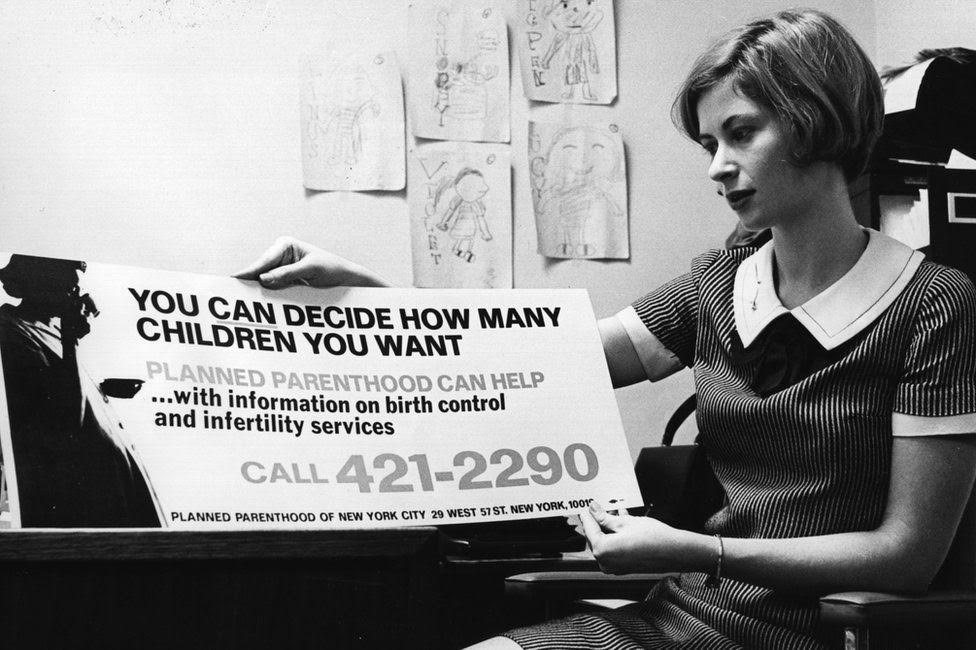

The fertility awareness method can be used as a natural method of contraception, or birth control. With perfect use it can be up to 99% effective at protecting against pregnancy, which is the same as the hormonal contraceptive pill. But if this is true, why do so many people still distrust natural birth control as a legitimate means to prevent pregnancy by its users? As a user and advocate of the fertility awareness method myself, I will argue that the biggest challenge for marketers in the natural contraceptive industry is that they must overcome socio-cultural ideologies which breed mistrust of the very product they are trying to sell. Three cultural contributors of consumer mistrust that I will discuss are: myths and misinformation around female fertility; menstrual cycles as socially taboo; and natural contraception being perceived as anti-feminist.
Myths and Misinformation
Up until fairly recently, I too was once a believer in the pervasive myth that women can get pregnant any day of their cycle. Brighten (2020) touches on the reasons why this myth persists when explaining that school education around fertility is often not legally required to be biologically accurate, and that often being taught about our bodies in school is forgone altogether (this too was my case). She also highlights how often abstinence is stressed in school which uses fear-inducing misinformation to assert certain ideologies (for example, religiously conservative ones). She says, ‘if we are taught false information during our formative years by people we perceive to be a state of authority and trust, it can be much more difficult to accept the facts when they are presented to us later in life’ (Brighten, 2020). Scientific knowledge tells us that once a woman’s egg(s) dissolves during the twenty-four hour period after she ovulates then pregnancy is biologically impossible until during or after her next period (Brighten, 2020, & Weschler, 2016, 47-48). The pervasiveness of this societal myth, that it is biologically possible that women can get pregnant any day of their cycle, is often why many couples who stop using traditional contraceptives to conceive are disappointed and confused that they do not get pregnant easily or immediately (Robock, 2018). This myth is thus a huge challenge for the natural contraceptive industry to overcome because it spreads the misinformation that it is biologically impossible for a woman to be naturally infertile (and thus naturally protected from unwanted pregnancies) during certain days of her menstrual cycle. This myth would suggest that natural contraception is impossible.
This cultural challenge is exacerbated by the misrepresentative and outdated efficacy rates that
doctors often cite for natural contraceptive methods such as Fertility Awareness (Daley, n.d). Turner
notes that:
‘[GP’s] contraceptive resources misleadingly group all fertility-awareness contraceptive
effectiveness as 76%, corresponding to effectiveness for the Rhythm method. This would be akin to
assigning “hormonal contraception” (including the Mirena, Implanon and oral contraceptive pills) a
single effectiveness rate of 91% when in fact Mirena is >99%’ (2016, 376).
She goes on to talk about how Billings, a mucus-only FAM, has an efficacy similar to the pill;
typical use 89.5%, perfect use 99%. Sympto-thermal and sympto-hormonal methods have similar
typical and perfect use rates (Weschler, 2016, 422-23), and all modern efficacies for FAMs are
based on when the user has learned the method with a certified instructor (Drake, 2021).
Unfortunately, the spreading of inaccurately low natural contraceptive efficacy rates solidifies the
cultural myth that natural birth control is biologically impossible and thus further creates the
message that using a natural method as contraception is an irresponsible choice. I can vouch for this
stigma first-hand having experienced judgment, criticism and worry from people around me when
voicing I am an FAM user. There was also a section of my FAM course which gave tips on how to
deal with inevitable judgement.
It is clear to see then how marketers within the natural contraceptive industry are challenged to overcome (and effectively dissolve) such socio-cultural beliefs and mistrust towards their products in order to sell them. It is thus essentially the marketers’ job to bring to light this misinformation and expose it for what is is; to unravel deep-rooted social mythology is no easy feat.
Menstrual Taboo
A second cultural challenge that the natural contraceptive industry will have to overcome is
that natural menstrual cycles and periods are considered socially taboo and perceived negatively.
Bobel highlights how ‘acceptable menstrual discourse ... is limited to complaints about cramps,
jokes about mood swings, and, increasingly, the appeal of continuous oral contraceptives to
suppress menstruation’ (2010, 44). Grigg-Spall similarly highlights how ‘our cultural view of
menstruation has acted as a catalyst for our eager uptake of hormonal contraceptives. We have been
told for decades that periods are unfeminine, unattractive and gross and that having a period is
shameful and unbearable’ (2013, 65). What both authors highlight here is that there is no social
value for the fluctuations of the natural menstrual cycle due to deep-rooted patriarchal ideologies
within Western cultures. Patriarchal values also intersect with and are exacerbated by capitalistic
ideologies. Kissling discusses this with reference to the postfeminist, neoliberal subject who is
controlled, predictable, and ready for work at all times. She notes how it is these type of women that
are most used in US TV commercials for oral contraceptive pills which were advertised as lifestyle
drugs by reinforcing these negative attitudes towards the “chaotic” or “unpredictable” menstrual
cycle in their marketing messaging (2013, 490-504). The ideal member of this patriarchal-
capitalistic structured society then seems to have the non-cyclical biology of a male.
The reason why these negative cultural beliefs surrounding female fertility pose a challenge for the natural contraceptive industry is because natural contraception does not suppress this, but rather embraces it. Just like how marketers within the traditional contraceptive industry capitalised on negative cultural attitudes towards female fertility to sell their products, marketers for natural contraception will have to capitalise on more niche social movements which promote positive attitudes towards this. Movements such as period positivity or radical menstruators re-frame female fertility and menstruation in a positive light to counter traditional patriarchal and capitalistic cultural ideologies.
Politicisation of Contraceptive Choice
The politicisation of contraceptive choice is also a socio-political challenge to this industry. During 1950-70 feminists fought and protested for more reproductive freedom for women; they fought for the pill (Watkins, 1998). Grigg-Spall highlights how their feminist politics were centred around the “biology is not destiny” argument, and that this politicisation of the pill means that non- pill taking women now are ‘treated as difficult and irresponsible, ... they are ungrateful of the work of women in history and of the privilege afforded them’ (2013, 71). The rise of cancel culture and this moral judgement upon non-pill taking women creates an obstacle for the natural birth control industry because consumers are reluctant to buy their product due to fear of exclusion. There is thus an opportunity here for marketers to make female consumers realise that choosing natural contraception is not anti-feminist, but rather approaches feminism via a different route. Martin offers ways of thinking to escape from the “biology is not destiny” bind. She argues that we need to start listening to and considering women’s fluctuating experiences throughout their cycle, and rather than seeing these natural differences to men as the problem to be fixed or suppressed, to see the society that requires this to be the problem which needs to be addressed (Martin, 1987, as cited by Grigg-Spall, 2013, 70).
Using thorough data and evidence, Perez similarly shows how society and its infra-structure has not been built for or by women; that by ignoring biological differences we are not necessarily achieving more equality, because equality is achieved when we do not discriminate women for their natural differences (2019). Bobel also re-considers whether a woman’s choice to suppress her menstrual cycle with oral contraceptives comes from a place of true, autonomous liberation when the reasons for doing so may be rooted in inherently patriarchal ideologies and misinformation (2010) such as those previously discussed. Personally, my decision to use natural contraception was solidified when realising the lack of logic behind women taking medication that affects their physiology 24/7 (and has side effects) when women are cyclically fertile for 24 hours but men are fertile 24/7 (Weschler, 2016, 12, 35). I believe that drawing consumers’ attention towards these issues, questions and injustices would help to dissolve this socio-cultural belief and thus the problem marketers in this industry face.
These socio-cultural elements of misinformation and lack of education, menstrual taboo and the politicisation of contraceptive choice are what ultimately create consumer mistrust for natural contraceptives. This means that building a new foundation of trust in consumers in this industry is the main challenge for marketing natural birth control.
References:
- Arnould, E., & Thompson, C. (2005). Consumer Culture Theory (CCT): Twenty Years of Research, Journal of Consumer Research, 31(4), 868–882, https://doi.org/10.1086/426626
- Bobel, C. (2010). New Blood: Third-Wave Feminism and The Politics of Menstruation. Rutgers University Press.
- Brighten, J. (2020, August 7). Can You Get Pregnant Any Time of The Month?, Dr Jolene Brighten. https://drbrighten.com/can-you-get-pregnant-any-time-of-the-month/
- Daley, M. (n.d.). Effective way to avoid pregnancy: An introduction to fertility awareness-based methods of family planning, Facts About Fertility. https://www.factsaboutfertility.org/are- fertility-awareness-based-methods-of-family-planning-effective-an-introduction-to-the- evidence/
- Drake, M. (2021, March 12). Fertility Awareness - Is It Best to Learn from an Instructor or DIY?,
Tempdrop. https://www.tempdrop.com/blogs/blog
/fertility-awareness-is-it-best-to-learn- from-an-instructor-or-diy - Grigg-Spall, H. (2013). Sweetening the Pill: Or How We Got Hooked on Hormonal Birth Control. Zero Books.
- Kissling, E. (2013). Pills, Periods and Postfeminism: The new politics of marketing birth control,
Feminist Media Studies, 13(3), 490-504, https://doi.org/10.1080/14680777.2012.
712373 - Kotler, P., & Zaltman, G. (1971). Social Marketing: An Approach to Planned Social
Change. Journal of Marketing, 35(3), 3–12. https://doi.org/10.1177/
002224297103500302 - Martin, E. (1987). The Woman in the Body: A Cultural Analysis of Reproduction, Beacon Press.
- Natural Cycles. (2021). NC Birth Control. https://www.naturalcycles.com/is-natural-cycles-right- for-me
- Perez, C. (2019). Invisible Women: Exposing data bias in a world designed for men. Penguin. Robock, K. (2018, May 22). Why you shouldn’t worry if you don’t get pregnant right away, Today’s Parent. https://www.todaysparent.com/getting-pregnant/trying-to-conceive/why-you- shouldnt-worry-if-you-dont-get-pregnant-right-away/
- Sekhon, H., Ennew, C., Kharouf, H., & Devlin, J. (2014). Trustworthiness and trust: influences and implications, Journal of Marketing Management, 30(3-4), 409-430, DOI: 10.1080/0267257X.2013.842609
- Solinger, R., Elizabeth Siegel Watkins,. On the Pill: A Social History of Oral Contraceptives, 1950– 1970. Baltimore: Johns Hopkins University Press. 1998. Pp. viii, 183. $25.95, The American Historical Review, Volume 105, Issue 5, December 2000, Page 1773, https:// doi.org/10.1086/ahr/105.5.1773
- Sudjic, O. (2018, July 21). ‘I felt colossally naive’: the backlash against the birth control app, The
Guardian.https://www.theguardian.com/
society/2018/jul/21/colossally-naive-backlash- birth-control-app - Sung, Y., & Kim, J. (2010). Effects of brand personality on brand trust and brand affect, Psychology & Marketing, 27(7), 639-661. https://doi.org/10.1002/mar.20349
- Turner J. (2016). Fertility-awareness practice and education in general practice. Australian journal of primary health, 22(5), 375–376. https://doi.org/10.1071/PY16097
- Watkins, E. S. (1998). On the Pill: A Social History of Oral Contraceptives, 1950-70. John Hopkins University Press.
- Weschler, T. (2016). Taking Charge of Your Fertility. Penguin.